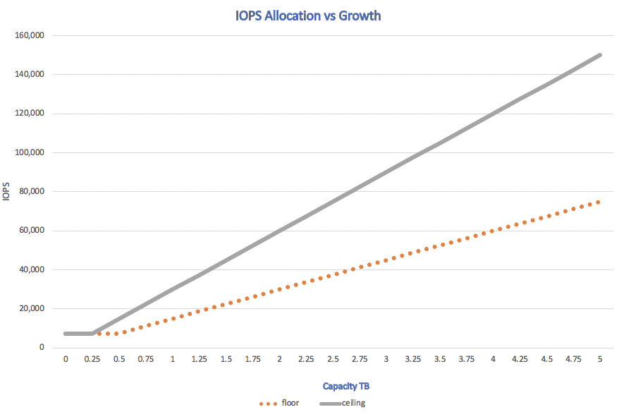
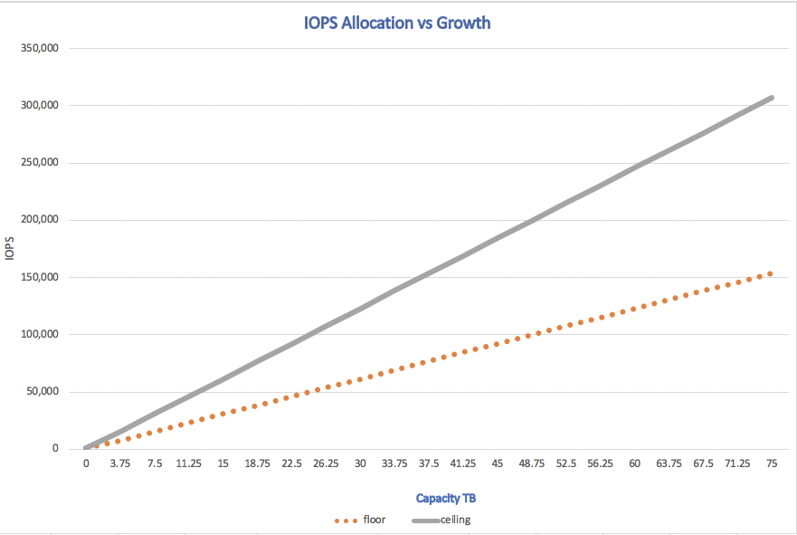

Workload testing
Contributors
 Download PDF of this page
Download PDF of this page
AFF A300 procedure
The AFF A300 HA pair can comfortably run the largest Epic instance in existence. If you have two or more very large Epic instances, you might need to use an AFF A700, based on the outcome of the NetApp SPM tool.
Data generation
Data inside the LUNs were generated with Epic’s Dgen.pl script. The script is designed to create data similar to what would be found inside an Epic database.
The following Dgen command was run from both RHEL VMs, epic-rhel1 and epic-rhel2:
./dgen.pl --directory "/epic" --jobs 2 --quiet --pctfull 20
-pctfull is optional and defines the percentage of the LUN to fill with data. The default is 95%. The size does not affect performance, but it does affect the time to write the data to the LUNs.
After the dgen process is complete, you can run the GenIO tests for each server.
Run GenIO
Two servers were tested. A ramp run from 75,000 to 110,000 IOPS was executed, which represents a very large Epic environment. Both tests were run at the same time.
Run the following GenIO command from the server epic-rhel1:
./RampRun.pl –miniops 75000 --maxiops 110000 --background --disable-warmup --runtime 30 --wijfile /epic/epicjrn/GENIO.WIJ --numruns 10 --system epic-rhel1 --comment Ramp 75-110k
GenIO result on the AFF A300
The following table lists GenIO results on the AFF A300
| Read IOPs | Write IOPs | Total IOPs | Longest write cycle (sec) | Effective write latency (ms) | Randread average (ms) |
|---|---|---|---|---|---|
142505 |
46442 |
188929 |
44.68 |
0.115 |
0.66 |
AFF A700 procedure
For larger Epic environments, typically greater than ten million global references, customers can choose the AFF A700.
Data generation
Data inside the LUNs was generated with Epic’s Dgen.pl script. The script is designed to create data similar to what would be found inside an Epic database.
Run the following Dgen command on all three RHEL VMs.
./dgen.pl --directory "/epic" --jobs 2 --quiet --pctfull 20
-pctfull is optional and defines the percentage of the LUN to fill with data. The default is 95%. The size does not affect performance, but it does affect the time to write the data to the LUNs.
After the dgen process is complete you are ready to run the GenIO tests for each server.
Run GenIO
Three servers were tested. On two servers, a ramp run from 75,000 to 100,000 IOPs was executed, which represents a very large Epic environment. The third server was set up as a bully to ramp run from 75,000 IOPS to 170,000 IOPS. All three tests were run at the same time.
Run the following GenIO command from the server epic-rhel1:
./RampRun.pl –miniops 75000 --maxiops 100000 --background --disable-warmup --runtime 30 --wijfile /epic/epicjrn/GENIO.WIJ --numruns 10 --system epic-rhel1 --comment Ramp 75-100k
GenIO results on the AFF A700
The following table presents the GenIO results a test of the AFF A700.
| Read IOPs | Write IOPs | Total IOPs | Longest write cycle (sec) | Effective write latency (ms) | Randread average (ms) |
|---|---|---|---|---|---|
241,180 |
78,654 |
319,837 |
43.24 |
0.09 |
1.05 |
Performance SLA with AQOS
NetApp can set floor and ceiling performance values for workloads using AQOS policies. The floor setting guarantees minimum performance. IOPS/TB can be applied to a group of volumes for an application like Epic. The Epic workload assigned to a QoS policy is protected from other workloads on the same cluster. The minimum requirements are guaranteed while allowing the workload to peak and use available resources on the controller.
In this test, server 1 and server 2 were protected with AQOS, and the third server acted as a bully workload to cause performance degradation within the cluster. AQOS allowed servers 1 and 2 to perform at the specified SLA, while the bully workload showed signs of degradation with longer write cycles.
Adaptive quality of service defaults
ONTAP comes configured with three default AQOS policies: value, performance, and extreme. The values for each policy can be view with the qos command. Use -instant at the end of the command to view all AQOS settings.
::> qos adaptive-policy-group show Name Vserver Wklds Expected IOPS Peak IOPS extreme fp-g9a 0 6144IOPS/TB 12288IOPS/TB performance fp-g9a 0 2048IOPS/TB 4096IOPS/TB value fp-g9a 0 128IOPS/TB 512IOPS/TB
Here is the syntax to create an AQOS policy:
::> qos adaptive-policy-group modify -policy-group aqos- epic-prod1 -expected-iops 5000 -peak-iops 10000 -absolute-min-iops 4000 -peak-iops-allocation used-space
There are a few important settings in an AQOS policy:
-
Expected IOPS. This adaptive setting is the minimum IOPS/TB value for the policy. Workloads are guaranteed to get at least this level of IOPS/TB. This is the most important setting in this testing. In our example test, the performance AQOS policy was set to 2048IOPS/TB.
-
Peak IOPS. This adaptive setting is the maximum IOPS/TB value for the policy. In our example test, the performance AQOS policy was set to 4096IOPS/TB.
-
Peak IOPS allocation. Options are allocated space or used space. Set this parameter to used space, because this value changes as the database grows in the LUNs.
-
Absolute minimum IOPS. This setting is static and not adaptive. This parameter sets the minimum IOPS regardless of size. This value is only used when size is less than 1TB and has no effect on this testing.
Typically, Epic workloads in production run at about ~1000 IOPS/TB of storage and capacity, and IOPS grows linearly. The default AQOS performance profile is more than adequate for an Epic workload.
For this testing the lab did not reflect a production size database with a smaller size of 5TB. The goal was to run each test at 75,000 IOPS. The setting for the EpicProd AQOS policy is shown below.
-
Expected IOPS/TB = Total IOPS/used space
-
15,000 IOPS/TB = 75,000 IOPS/5TB
The following table presents the settings that were used for the EpicProd AQOS policy.
| Setting | Value |
|---|---|
Volume size |
5TB |
Required IOPS |
75,000 |
peak-iops-allocation |
Used space |
Absolute minimum IOPS |
7,500 |
Expected IOPS/TB |
15,000 |
Peak IOPS/TB |
30,000 |
The following figure shows how floor IOPS and ceiling IOPS are calculated as the used space grows over time.

For a production-sized database, you can either create a custom AQOS profile like the one used in the last example, or you can use the default performance AQOS policy. The settings for the performance AQOS policy are show in the table below.
| Setting | Value |
|---|---|
Volume size |
75TB |
Required IOPS |
75,000 |
peak-iops-allocation |
Used space |
Absolute minimum IOPS |
500 |
Expected IOPS/TB |
1,000 |
Peak IOPS/TB |
2,000 |
The following figure shows how floor and ceiling IOPS are calculated as the used space grows over time for the default performance AQOS policy.

Parameters
-
The following parameter specifies the name of the adaptive policy group:
-policy-group <text> - Name
Adaptive policy group names must be unique and are restricted to 127 alphanumeric characters including underscores "_" and hyphens "-". Adaptive policy group names must start with an alphanumeric character. Use the
qos adaptive-policy-group renamecommand to change the adaptive policy group name. -
The following parameter specifies the data SVM (called vserver in the command line) to which this adaptive policy group belongs.
-vserver <vserver name> - Vserver
You can apply this adaptive policy group to only the storage objects contained in the specified SVM. If the system has only one SVM, then the command uses that SVM by default.
-
The following parameter specifies the minimum expected IOPS/TB or IOPS/GB allocated based on the storage object allocated size.
-expected-iops {<integer>[IOPS[/{GB|TB}]] (default: TB)} - Expected IOPS -
The following parameter specifies the maximum possible IOPS/TB or IOPS/GB allocated based on the storage object allocated size or the storage object used size.
-peak-iops {<integer>[IOPS[/{GB|TB}]] (default: TB)} - Peak IOPS -
The following parameter specifies the absolute minimum IOPS that is used as an override when the expected IOPS is less than this value.
[-absolute-min-iops <qos_tput>] - Absolute Minimum IOPS
The default value is computed as follows:
qos adaptive-policy-group modify -policy-group aqos- epic-prod1 -expected-iops 5000 -peak-iops 10000 -absolute-min-iops 4000 -peak-iops-allocation used-space
qos adaptive-policy-group modify -policy-group aqos- epic-prod2 -expected-iops 6000 -peak-iops 20000 -absolute-min-iops 5000 -peak-iops-allocation used-space
qos adaptive-policy-group modify -policy-group aqos- epic-bully -expected-iops 3000 -peak-iops 2000 -absolute-min-iops 2000 -peak-iops-allocation used-space
Data generation
Data inside the LUNs was generated with the Epic Dgen.pl script. The script is designed to create data similar to what would be found inside an Epic database.
The following Dgen command was run on all three RHEL VMs:
./dgen.pl --directory "/epic" --jobs 2 --quiet --pctfull 20
Run GenIO
Three servers were tested. Two ran at a constant 75,000 IOPS, which represents a very large Epic environment. The third server was setup as a bully to ramp run from 75,000 IOPS to 150,000 IOPS. All three tests were run at the same time.
Server epic_rhel1 GenIO test
The following command was run to assign EpicProd AQOS settings to each volume:
::> vol modify -vserver epic -volume epic_rhel1_* -qos-adaptive-policy-group AqosEpicProd
The following GenIO command was run from the server epic-rhel1:
./RampRun.pl –miniops 75000 --maxiops 75000 --background --disable-warmup --runtime 30 --wijfile /epic/GENIO.WIJ --numruns 10 --system epic-rhel1 --comment Ramp constant 75k
Server epic_rhel2 GenIO test
The following command was run to assign EpicProd AQOS settings to each volume:
::> vol modify -vserver epic -volume epic_rhel2_* -qos-adaptive-policy-group AqosEpicProd
The following GenIO command was run from the server epic-rhel2:
./RampRun.pl --miniops 75000 --maxiops 75000 --background --disable-warmup --runtime 30 --wijfile /epic/GENIO.WIJ --numruns 10 --system epic-rhel2 --comment Ramp constant 75k
Server epic_rhel3 GenIO test (bully)
The following command assigns no AQOS policy to each volume:
::> vol modify -vserver epic -volume epic_rhel3_* -qos-adaptive-policy-group non
The following GenIO command was run from the server epic-rhel3:
./RampRun.pl --miniops 75000 --maxiops 150000 --background --disable-warmup --runtime 30 --wijfile /epic/GENIO.WIJ --numruns 10 --system epic-rhel3 --comment Ramp 75-150k
AQOS test results
The tables in the following sections contain the output from the summary.csv files from each concurrent GenIO test. To pass the test, the longest write cycle must have been below 45 seconds. The effective write latency must have been below 1 millisecond.
Server epic_rhel1 GenIO results
The following table illustrates GenIO results for AQOS server epic_rhel1.
| Run | Read IOPS | Write IOPS | Total IOPS | Longest write cycle (sec) | Effective write latency (ms) |
|---|---|---|---|---|---|
10 |
55655 |
18176 |
73832 |
32.66 |
0.12 |
11 |
55653 |
18114 |
73768 |
34.66 |
0.1 |
12 |
55623 |
18099 |
73722 |
35.17 |
0.1 |
13 |
55646 |
18093 |
73740 |
35.16 |
0.1 |
14 |
55643 |
18082 |
73726 |
35.66 |
0.1 |
15 |
55634 |
18156 |
73791 |
32.54 |
0.1 |
16 |
55629 |
18138 |
73767 |
34.74 |
0.11 |
17 |
55646 |
18131 |
73777 |
35.81 |
0.11 |
18 |
55639 |
18136 |
73775 |
35.48 |
0.11 |
19 |
55597 |
18141 |
73739 |
35.42 |
0.11 |
Server epic_rhel2 GenIO results
The following table illustrates GenIO results for AQOS server epic_rhel2.
| Run | Read IOPS | Write IOPS | Total IOPS | Longest write cycle (sec) | Effective write latency (ms) |
|---|---|---|---|---|---|
10 |
55629 |
18081 |
73711 |
33.96 |
0.1 |
11 |
55635 |
18152 |
73788 |
28.59 |
0.09 |
12 |
55606 |
18154 |
73761 |
30.44 |
0.09 |
13 |
55639 |
18148 |
73787 |
30.37 |
0.09 |
14 |
55629 |
18145 |
73774 |
30.13 |
0.09 |
15 |
55619 |
18125 |
73745 |
30.03 |
0.09 |
16 |
55640 |
18156 |
73796 |
33.48 |
0.09 |
17 |
55613 |
18177 |
73790 |
33.32 |
0.09 |
18 |
55605 |
18173 |
73779 |
32.11 |
0.09 |
19 |
55606 |
18178 |
73785 |
33.19 |
0.09 |
Server epic_rhel3 GenIO results (bully)
The following table illustrates GenIO results for AQOS server epic_rhel3.
| Run | Write IOPS | Total IOPS | Longest WIJ Time (sec) | Longest Write Cycle (sec) | Effective Write Latency (ms) |
|---|---|---|---|---|---|
10 |
19980 |
81207 |
21.48 |
40.05 |
0.1 |
11 |
21835 |
88610 |
17.57 |
46.32 |
0.12 |
12 |
23657 |
95955 |
19.77 |
53.03 |
0.12 |
13 |
25493 |
103387 |
21.93 |
57.53 |
0.12 |
14 |
27331 |
110766 |
23.17 |
60.57 |
0.12 |
15 |
28893 |
117906 |
26.93 |
56.56 |
0.1 |
16 |
30704 |
125233 |
28.05 |
60.5 |
0.12 |
17 |
32521 |
132585 |
28.43 |
64.38 |
0.12 |
18 |
34335 |
139881 |
30 |
70.38 |
0.12 |
19 |
36361 |
147633 |
22.78 |
73.66 |
0.13 |
AQOS test results analysis
The results from the previous section demonstrate that the performance of the servers epic_rhel1 and epic_rhel2 are not affected by the bully workload on epic_rhel3. epic_rhel3 ramps up to 150,000 IOPS and starts to fail the GenIO test as it hits the limits of the controllers. The write cycle and latency on epic_rhel1 and epic_rhel2 stay constant while the bully server spirals out of control.
This illustrates how an AQOS minimum policy can effectively isolate workloads from bullies and guarantee a minimum level of performance.
AQOS has a number of benefits:
-
It allows for a more flexible and simplified architecture. Critical workloads no longer need to be siloed and can coexist with noncritical workloads. All capacity and performance can be managed and allocated with software rather than by using physical separation.
-
It saves on the amount of disk and controllers required for Epic running on an ONTAP cluster.
-
It simplifies the provisioning of workloads to performance policies that guarantee consistent performance.
-
Optionally, you can also implement of NetApp Service Level Manager to perform the following tasks:
-
Create a catalog of services to simplify provisioning of storage.
-
Deliver predictable service levels so that you can consistently meet utilization goals.
-
Define service-level objectives.
-
 Edit on GitHub
Edit on GitHub